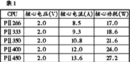
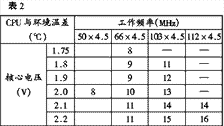

|
| 当前位置：电脑报电子版 > 1999 年 > 26 期 > 硬件周刊 > 让芯降压渡炎夏 |
| 《 让芯降压渡炎夏 》 |
| 夏天到了，蝉儿叫。你可知否被你狠心超频的“芯”（CPU）也在酷热中痛苦地煎熬，不为别的，你给她加的负担太重了。你要玩最酷的3D游戏，她为你竭力奔跑，有点跑不动了，你就高举“加压”、“超频”大棒。如果你真的怜香惜玉，请珍惜她吧！当你在天热无奈用上风扇和空调时，不妨也给她点消暑纳凉的机会，以度过这炎炎夏日！ 我去年底以高价搞到一块极品PⅡ300（SL2W8），能稳超450MHz（100×4.5），而超500MHz（112×4.5）有点勉强，为此她也挨了我不少大棒。我可是怜香惜玉之人，天气渐热，我为她换了块更大的散热片，最近又为她加了一只风扇。此外，我尽可能保证机箱由内到外，由下到上空气流畅，最重要的，我给她“吃”了一颗避暑良“药”，那就是ACPI的节能功效。同许多其他的降温软件一样，在CPU运行的间隙暂停CPU的工作，此时CPU也就基本上无电能消耗。在日常应用中，CPU的实际占用率较低，因而从整体上可有效减少CPU的发热量，使得CPU的温升非常有限。就我个人的上述情况，通常情况下超频到450MHz，CPU只比环境温度高出不到6℃。作为比较，在DOS下失去了对该功能的支持，CPU的温度要高出环境温度11℃。关于ACPⅠ在Win98下的安装，请参见《电脑报》第21期21版《瞬间开机新技术——STR》一文。即便如此，对于发烧玩家来说，这也是杯水车薪，他们的CPU是很少有空闲的，经常是系统测试和玩各种顶级游戏，该软降温功用也就形同虚设。 许多问题，换一个角度也许又有完全不同的解决方案。首先让我们了解一下CPU的发热以及增加CPU核心电压的作用。CPU的发热来自于CPU的功耗，即电能的消耗，而每秒钟电能消耗的多少（以焦耳为单位）是加在其上的电压与工作电流的乘积。首先应该注意的是，工作电流又往往随着电压的升高而升高，也就是说，CPU的功耗与加在其上的电压是近乎二次方的关系，因而，CPU的发热量是与电压值密切相关的，稍微降低CPU上的电压会有效减少CPU的发热量，从而可实现控制温度的进一步提升。其次，我们再注意一下不同工作频率下CPU的发热量。一般来讲，采用相同工艺制作的同系列产品，他们的额定电压是一样的，CPU的发热量差异也就主要表现在工作电流的不同了。在此以我们熟知的PⅡ系列为例（见表一）。 表中只罗列了CPU中具有代表性的部分。可以看出，其额定工作电流随工作频率的升高而升高，并几乎成正比例关系，也就是说，发热量是随工作频率而成正比例变化的。不难推算，在散热条件相同的情况下，CPU的温度也会随工作频率的提高而节节高。这也就不难解释为什么PⅡ450的L2 Cache要紧贴散热铝板以利散热。我等发烧友若没有这些CPU散热方面的改进措施，超频时就要慎之又慎了。CPU发热的危害主要有两个方面，一是温度过高后（表面温度大于50℃），就会有所谓的电子迁移现象，会在不同程度上降低CPU的使用寿命。实际上，已有发烧友不无遗憾地宣告他们所爱的芯撒手西去了。二是由于半导体器件对温度的敏感性，温度越高，它们的特性越差，CPU的表现就越不稳定，又需要加压，由此近乎走上了恶性循环之路。 我们再来分析一下，为什么适当加压会对超频稳定有所帮助？对于CPU等数字电路，随着温度或工作频率的升高，特别是其中某一项超过额定值时，由于器件自身材料和制作工艺的限制，其工作波形将变差，主要表现在幅值的降低和波形上升及下降沿变得更平滑，而不是那么棱角分明，这将给处理电路对波形中高低电平及时序的辨别变得更加困难。稍有扰动就会出现失误，即我们所说的出错，更严重的就是死机。加电压之后，相应提高了工作波形的幅值，使得高低电平易于区分，波形也就相对稳定了些。如果此时温度或工作频率再升高，又会使波形变得模糊不清，再次出现不稳定。这就是为什么加压后可工作到更高的极限频率。加压也不是没有限制的，一方面，受器件自身设计的限制，另一方面，加压又会增加发热量，也会使器件向不稳定的方向发展。 光说不练也不行，为此本人进行了相关的实验验证。CPU就是我那块SL2W8，塑料外壳已被我撬开并在L2Cache（NEC的D432836LGF－A50，是5ns的）与散热铝板之间加了一块打磨过的一角硬币，当然还有导热硅脂。测温传感头直插CPU的核心部位，因而可以认为所测得的CPU温度是较为准确的。实验主板为华硕P2B，CPU核心电压的调节采用外接精密可调电位器实现无级调节（具体技术细节请参见《电脑报》1999年19期20版）。内存MT－8E 64M，硬盘是火球七代6.4G，显卡为华硕V3000。测试软件采用了对系统要求较高的《极品飞车3》。CPU的工作频率由Softfsb1.6B5设置，CPU的核心电压以及温度由华硕最新的系统监控软件Prob2.01检测。每次调整并设置各参数后，运行《极品飞车》Mino四圈，然后退出并记录各测得值。实验结果如表2所示，由于各人的具体情况有所不同，分析和参考表中数据时，请更多地注意各数据之间的相对值或相对关系。尽管对温度的测量不够精确，但可以看出，夏日炎炎，以额定频率或降频使用CPU，将最有效地减少发热量从而可有效控制其温升。另外，降压使用CPU，其降温的效果也是非常显著的。特别是在1.8V时，CPU仍可超到463MHz（103×4.5），并且此时CPU的温度很接近该CPU额定工作时（2.0V，66×4.5）的温度。也就是说，降压超频使用CPU是完全可能的，特别是对于环境温度高的夏日具有重要意义。从原理上讲，不加压就可稳定超频的CPU，其工作波形具有一定的被模糊的阈度，就可以降压使用，以获得最低的温升，只不过，一个是采用过高的工作频率使得工作波形模糊化，另一个是由于使用低的电压使工作波形模糊化。不仅如此，由于降压使用不仅可获得更低的温升，而且其工作波形并没有变形，只是幅值低了一些，因而比超频应用具有更高的稳定性。 怎么样，没有空调为你的微机保驾护航的朋友，是否可以同挖掘CPU超频能力一样，挖掘CPU的降压以及降压后再超频的潜力，以安度这炎炎夏日，说到这，你可别骂我是逆历史潮流而行，我这也是让你对你那可爱的“芯”多一份了解，多一份关怀和体贴。最后，祝你和你的“芯”夏安。 (江苏 金昕) |
| 下载本期推荐软件 | 页 首 |
| 《电脑报》版权所有，电脑报网站编辑部设计制作发布 |